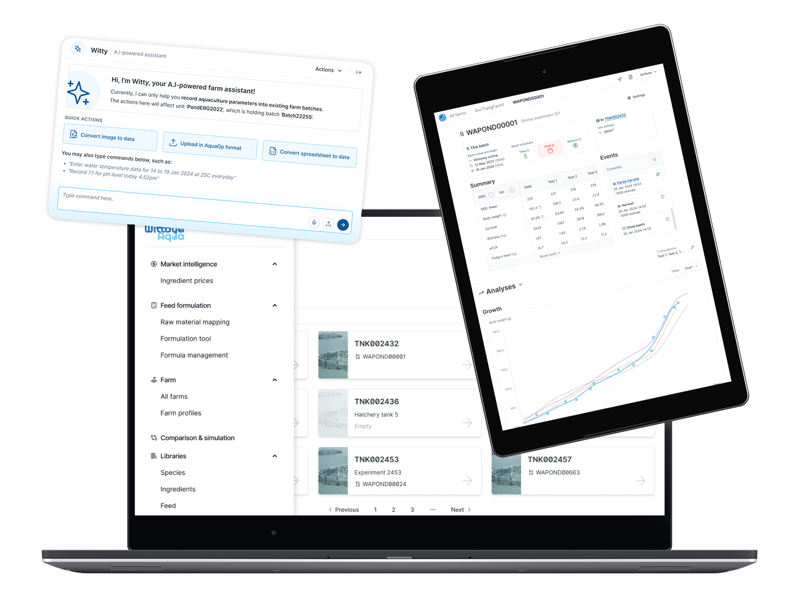
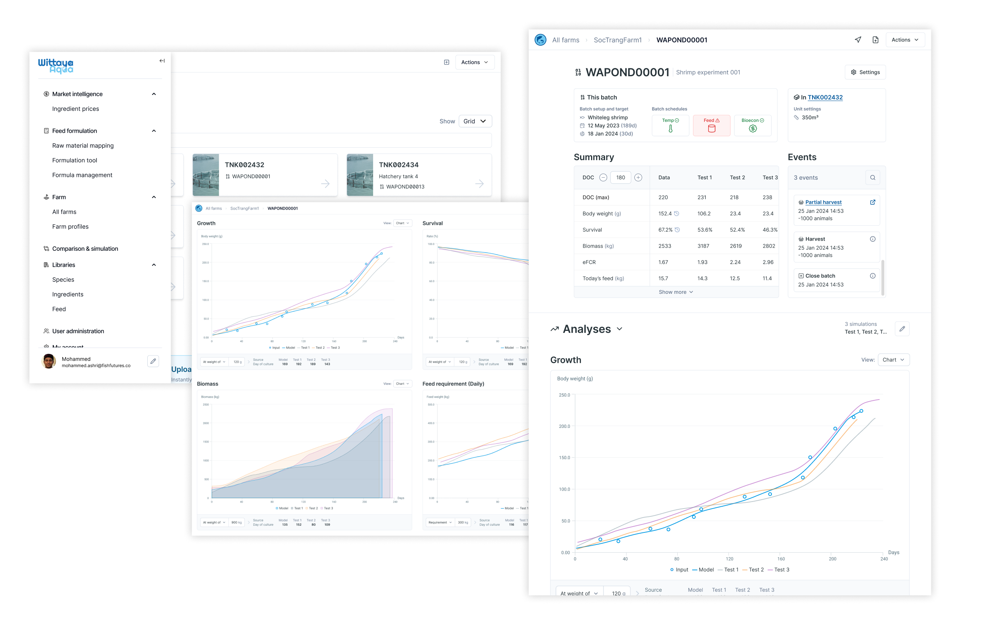
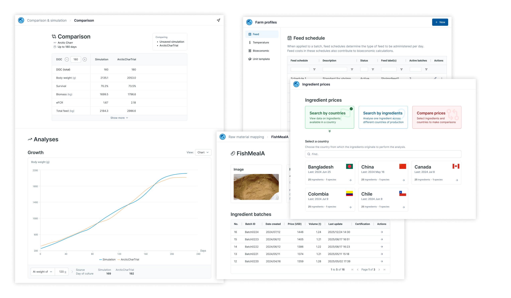
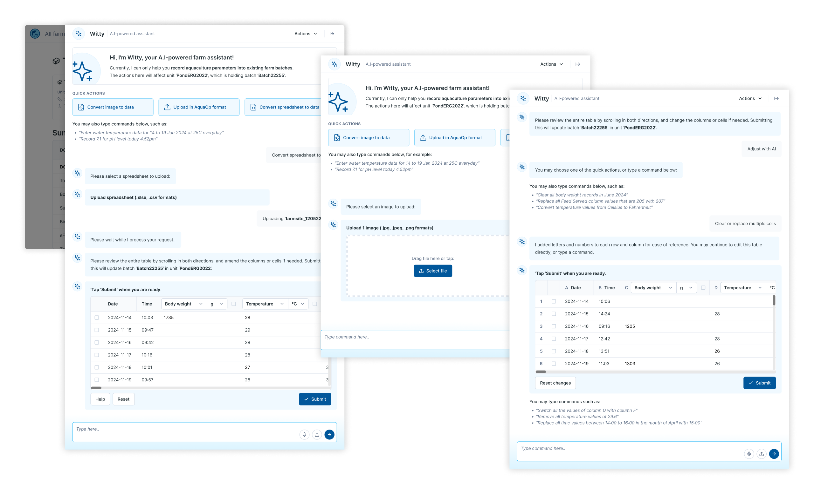
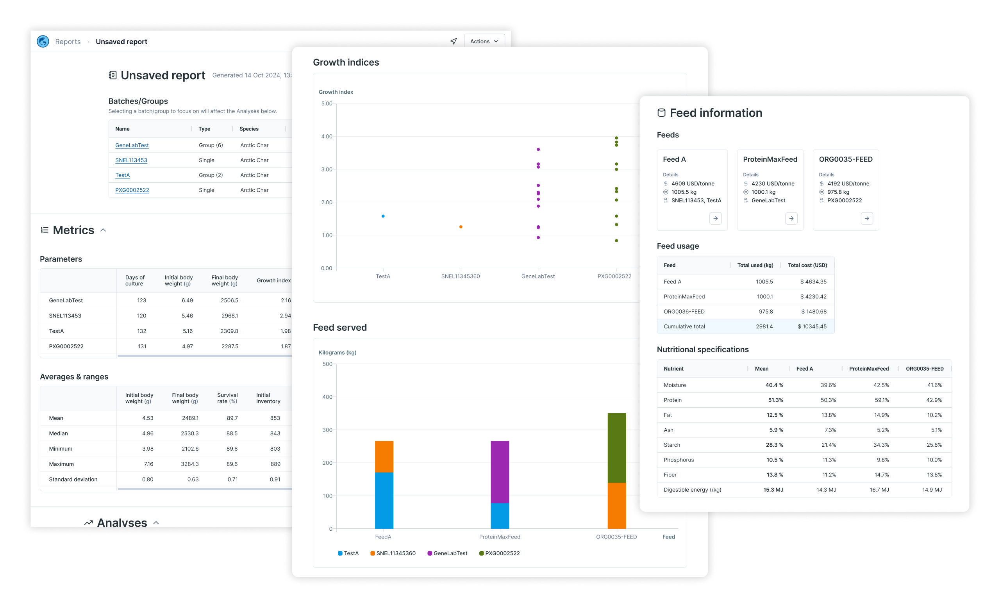
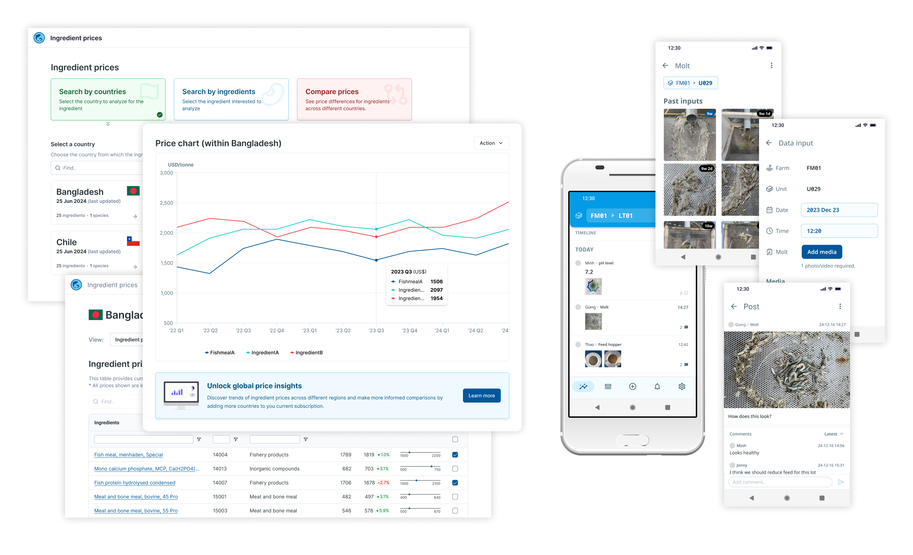

Get in touch for the full story


An agri-tech startup needed a more robust data entry and analytics platform to better serve new business needs. Working with various stakeholders, I led user research and design efforts for a comprehensive overhaul of the core product, connecting multiple features into a cohesive ecosystem that unlocked capabilities to serve changing business needs.
Subscribers reported increased satisfaction in the higher-quality analyses and superior user experience across modules, leading to 100% subscription retention since the redesign. Longer-term product planning enabled a business pivot towards consultancy services that reduced the delivery time of consultancy projects by ~30% through adoption of this product.
Design strategy
UX design
UI design
1 product manager
3 full-stack SWE
& more
Late 2023 to early 2025
Web
The various features available on the web platform were disconnected and looked dated, which weakened sales pitches and inhibited the implementation of future analyses. The R&D team wanted to deliver more analyses of higher quality that required a better interface.
Revamp the entire product line to merge 2 services, and develop a superior product experience that encompasses various existing and upcoming features.
Subscribers expressed greater satisfaction with the improved experience, retaining 100% of subscriptions. Sales teams also reported better impressions from new prospects.
A new design system cut significant front-end development time and effort to add new and update past features.


As the business direction changed, new tools were needed to support new services.
The business needed to harness new technologies to resolve known inefficiencies with its products, such as with data entry.
Develop scalable tools to meet new business needs. Incorporate artificial intelligence (AI) to improve the overall product experience.
New features developed to support a consultancy service reduced the average project delivery time of in-house consultants by ~30%.
Subscribers also reported increased customer satisfaction due to easier data entry onto the platform.


The business needed to explore new revenue streams that utilised their existing technology and assets.
Produce relevant solutions efficiently to validate new business ideas.
Developments include a new Android mobile app tool for farm data management and an overhaul of an existing ingredient price database.
While some developments was shelved or did not succeed, the systems and design components developed from these experiments remain relevant and in use.
